Shiying Xiong [CV]
Postdoc in Computer Science, Dartmouth College
Office: Sudikoff 157, Hanover, NH 03755, USA
Email: shiying.xiong@dartmouth.edu
I am a Postdoctoral Researcher working with Prof. Bo Zhu in the VCL Lab at Dartmouth College. I received my Ph.D. degree at Peking University in 2019, advised by Prof. Yue Yang. Before starting my Ph.D., I obtained a Bachelor's degree in Physics at Jilin University in 2014. My research interests include Hamiltonian Fluid Mechanics, Vortex Dynamics, Computational Physics, and Scientific Machine Learning.
Publications (Corresponding author *)
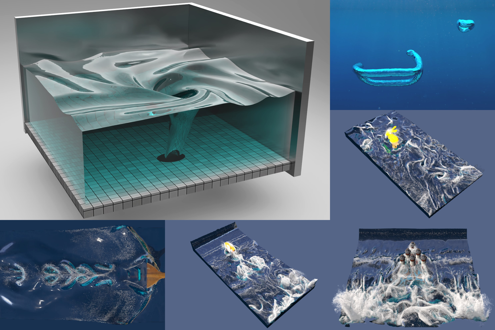
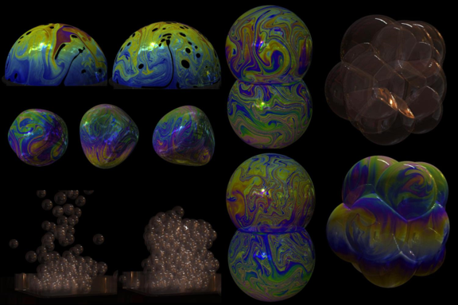
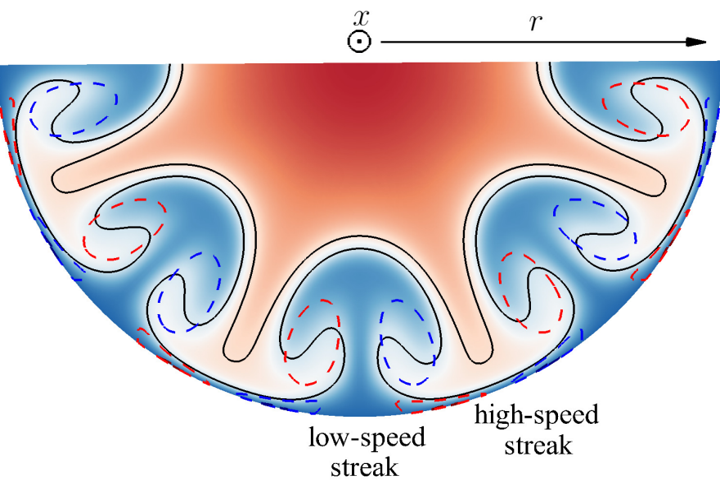
Shanxin Ruan, Shiying Xiong, and Jiaping You, and Yue Yang∗
Generation of streamwise helical vortex loops via successive reconnections in early pipe transition
Physics of Fluids, 34, 054112, 2022
[PDF]
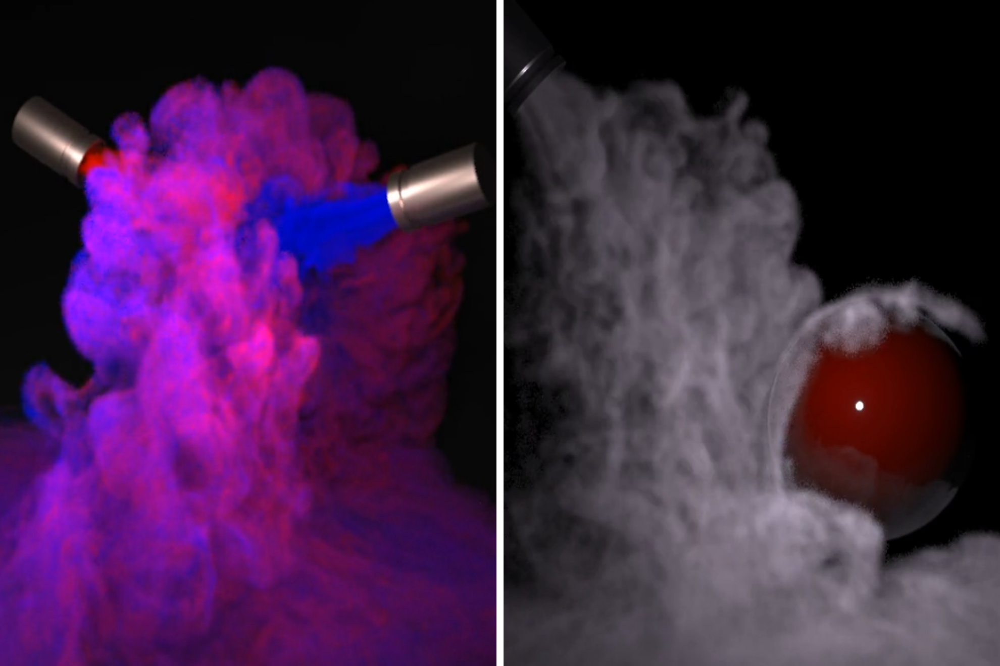
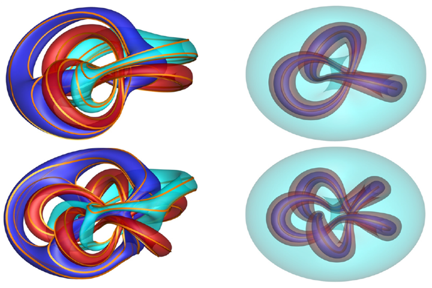
Rui Tao, Hongxiang Ren, Yunjin Tong, and Shiying Xiong*
Construction and evolution of knotted vortex tubes in incompressible Schrödinger flow
Physics of Fluids, 33, 077112, 2021 (Editor’s pick)
[PDF]
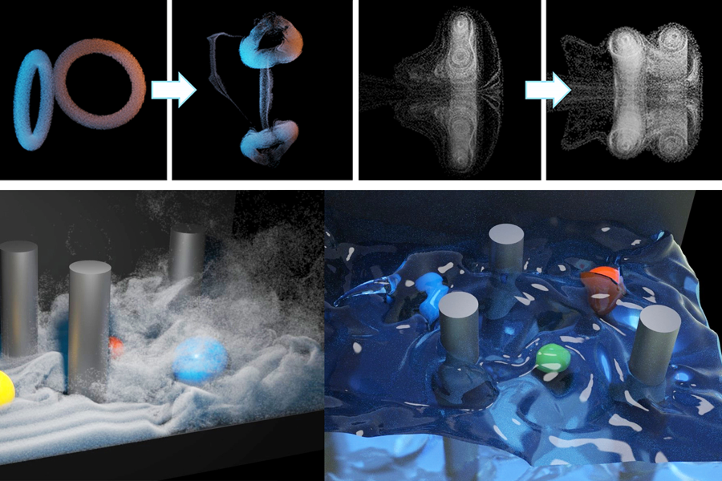
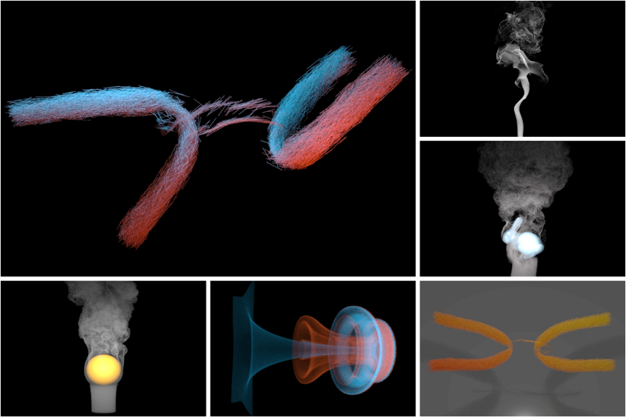

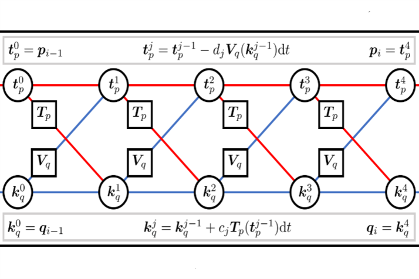
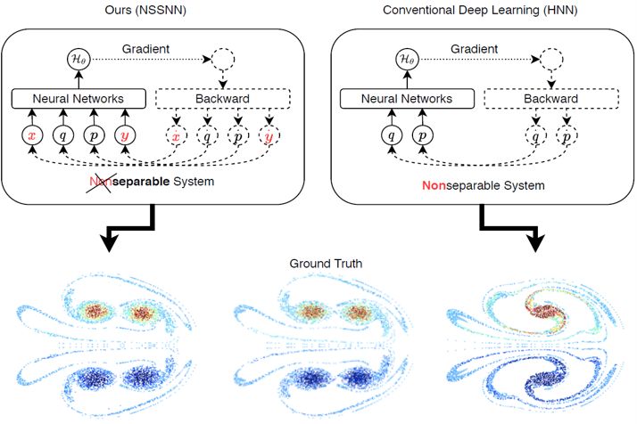
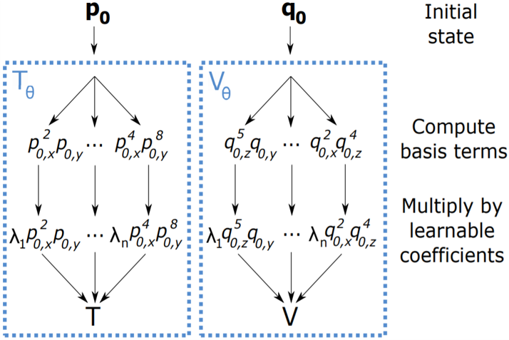
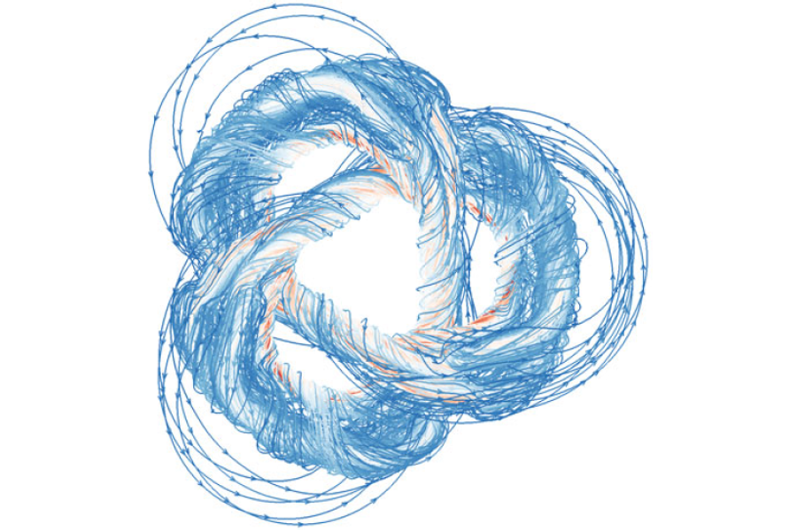
Shiying Xiong and Yue Yang*
Effects of twist on the evolution of knotted magnetic flux tubes
Journal of Fluid Mechanics, 895, A28, 2020
[PDF]
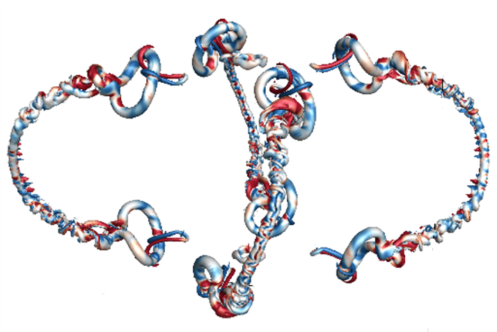
Shiying Xiong and Yue Yang*
Evolution and helicity analysis of linked vortex tubes in viscous flows
SCIENTIA SINICA Physica, Mechanica and Astronomica, 50, 040005, 2020 (in Chinese)
[PDF]
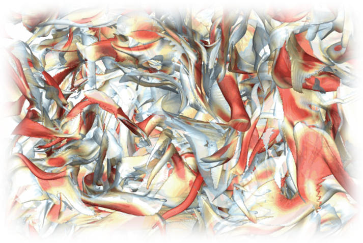
Shiying Xiong and Yue Yang*
Identifying the tangle of twisted vortex tubes in homogeneous isotropic turbulence
Journal of Fluid Mechanics, 874, 952-978, 2019 (Featured on cover)
[PDF]
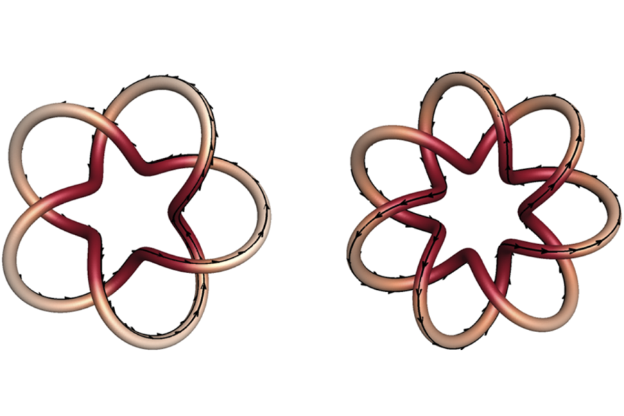
Shiying Xiong and Yue Yang*
Construction of knotted vortex tubes with the writhe-dependent helicity
Physics of Fluids, 31, 047101, 2019 (Editor’s pick)
[PDF]
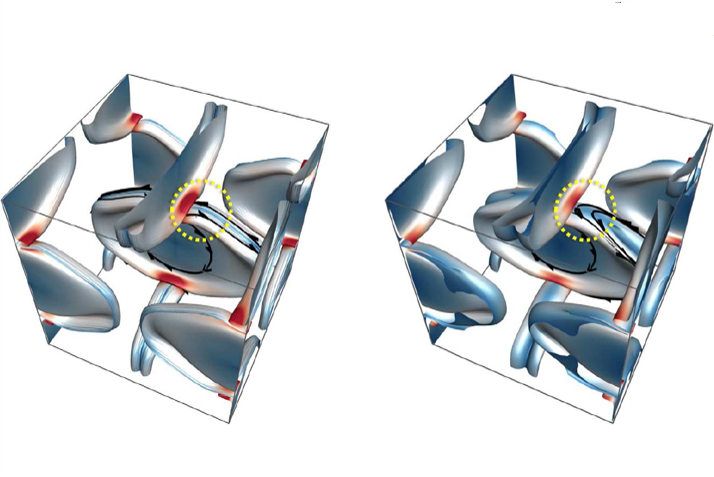
Jinhua Hao, Shiying Xiong, and Yue Yang*
Tracking vortex surfaces frozen in the virtual velocity in non-ideal flows
Journal of Fluid Mechanics, 863, 513-544, 2019
[PDF]
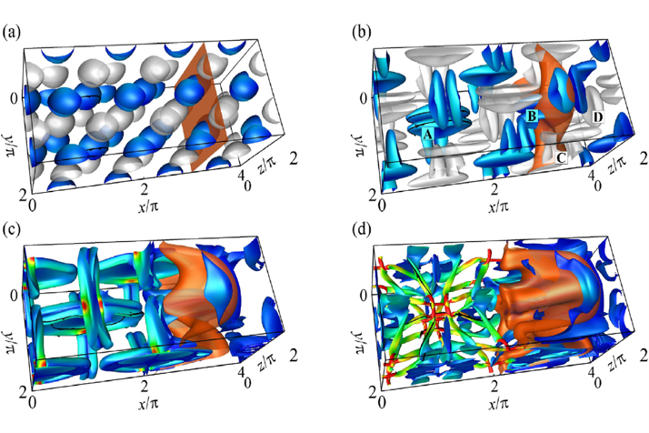
Hao Zhou, Jiaping You, Shiying Xiong, Yue Yang*, Dominique Thévenin, and Shiyi Chen
Interactions between the premixed flame front and the three-dimensional Taylor-Green vortex
Proceedings of the Combustion Institute, 37, 2461-2468, 2019
[PDF]
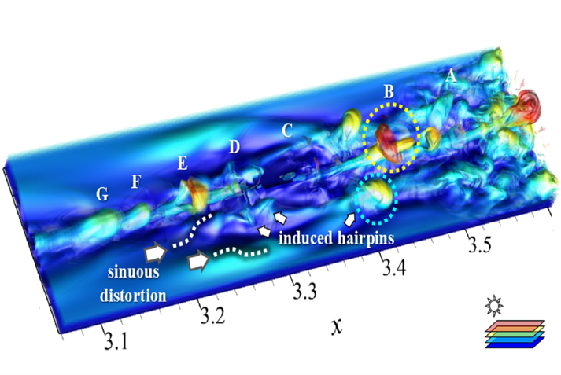
Yaomin Zhao, Shiying Xiong, Yue Yang*, and Shiyi Chen
Sinuous distortion of vortex surfaces in the lateral growth of turbulent spots
Physical Review Fluids, 3, 074701, 2018
[PDF]